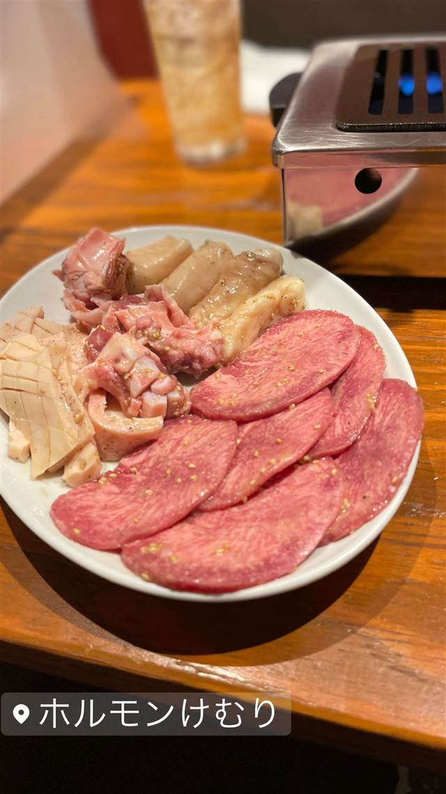

ホルモン けむり
店主自ら注文ごとにカットするその日仕入れのホルモン
ホルモンけむり
浅草生まれ浅草育ちの店主が、長年の焼肉店修業を経て2016年に開いたホルモン専門店。その日仕入れた新鮮なホルモンだけをメニューに並べ、注文ごとに店主自ら肉をカットするこだわりで地元で人気を集めている。
TRIVIA
豆知識
- 各席に一人用の小型テーブルロースターが備え付けられている
| 創業 | 2016年1月開業 |
|---|---|
| 看板 | その日仕入れた新鮮なホルモン |
| こだわり | 毎日仕入れる新鮮なホルモンだけをメニューに並べ、店主自ら注文ごとに肉をカットする |
| どこから | 都心 |
| 予算 | 夜 ¥4,000～¥4,999 |
| 予約 | 予約可 |
| 場所 | 浅草（つくばEXP） 東京都台東区浅草2-27-15 |
| メモ | 浅草駅から徒歩5分。各席に1人用の小型テーブルロースターを設置 |
食べたもの：焼肉・ホルモン
NEARBY
近い店・同じ系統の店
-
 ★
喫茶店 浅草
金龍（喫茶店）
元は旅館だった建物で味わうサイフォン式コーヒー
昼 ¥1,000～¥1,999 夜 ¥1,000～¥1,999
★
喫茶店 浅草
金龍（喫茶店）
元は旅館だった建物で味わうサイフォン式コーヒー
昼 ¥1,000～¥1,999 夜 ¥1,000～¥1,999
-
 ★
二郎系(インスパイア) つくばエクスプレス浅草駅
自家製麺 No11 ASAKUSA
二郎→富士丸の系譜を継ぐ、板橋人気店の浅草2号店
昼 ¥1,000～¥1,999 夜 ¥1,000～¥1,999
★
二郎系(インスパイア) つくばエクスプレス浅草駅
自家製麺 No11 ASAKUSA
二郎→富士丸の系譜を継ぐ、板橋人気店の浅草2号店
昼 ¥1,000～¥1,999 夜 ¥1,000～¥1,999
-
 うなぎ 浅草
初小川（はつおがわ）
注文を受けてから捌く、継ぎ足し辛口だれの江戸前うな重
昼 ¥3,000～¥3,999 夜 ¥3,000～¥3,999
うなぎ 浅草
初小川（はつおがわ）
注文を受けてから捌く、継ぎ足し辛口だれの江戸前うな重
昼 ¥3,000～¥3,999 夜 ¥3,000～¥3,999
-
 カフェ 浅草
浅草きびだんご あづま
無添加ゆえ時間が経つと硬くなるため実演販売でできたてを提供している
昼 ～¥999 夜 ～¥999
カフェ 浅草
浅草きびだんご あづま
無添加ゆえ時間が経つと硬くなるため実演販売でできたてを提供している
昼 ～¥999 夜 ～¥999
-
 アイス・ジェラート 浅草
舟和（本店）
芋ようかんを考案しみつ豆を喫茶で初めて出した元祖の老舗和菓子店
昼 ¥1,000～¥1,999 夜 ¥1,000～¥1,999
アイス・ジェラート 浅草
舟和（本店）
芋ようかんを考案しみつ豆を喫茶で初めて出した元祖の老舗和菓子店
昼 ¥1,000～¥1,999 夜 ¥1,000～¥1,999
-
 スイーツ 浅草
三鳩堂
鳩・提灯・五重塔の三種を店頭で焼き上げる人形焼
スイーツ 浅草
三鳩堂
鳩・提灯・五重塔の三種を店頭で焼き上げる人形焼